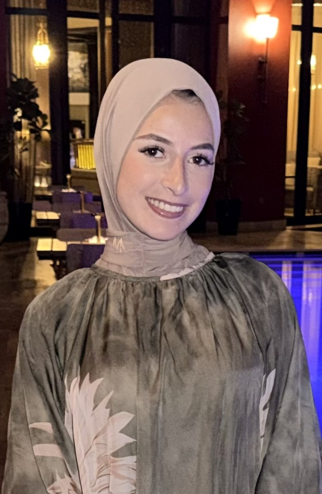

Rania Ahardane
Student programmeren met een passie voor reizen, bakken, schrijven en fotografie. Welkom op mijn portfolio.
Bekijk mijn projecten
Even kennismaken
Van ondernemen naar programmeren: ik ben student Graduaat Programmeren aan Thomas More. Op dit portfolio ontdek je mijn projecten en volg je mijn groei als beginnend developer.
Lees meer over mij